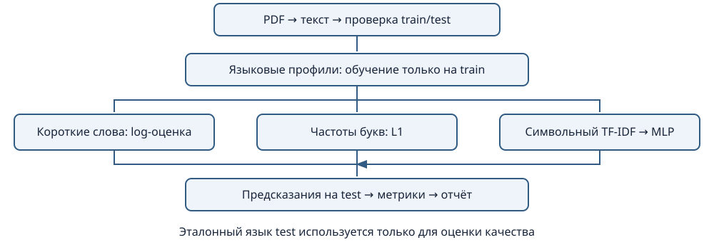
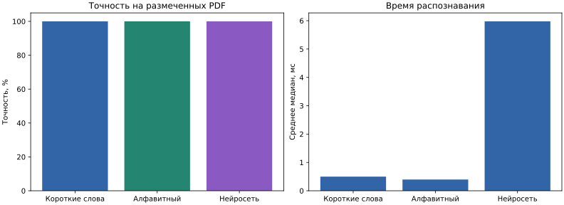

Лабораторная №2 · Вариант 36 · Английский / испанский · 2026-10-24T16:02:40.441639+00:00
GUI Tkinter и CLI вызывают единый сервис Experiment. Предметный слой содержит модели, частотные классификаторы и метрики; инфраструктурные адаптеры читают PDF, обучают MLP и сохраняют отчёт. Bootstrap собирает зависимости через небольшие Protocol-контракты. Длительные задачи GUI выполняются в потоке с очередью сообщений.
CorpusEntry: путь, роль, эталонный язык, источник. Document: текст, число страниц, хеш. Prediction: выбранный язык, оценки и объяснение. ResultRow: результат одного PDF. ExperimentReport: параметры, профили, времена, метрики и версии библиотек. JSON-манифест заменяет базу данных для этой небольшой коллекции.

pypdf извлекает текст; scikit-learn реализует TF-IDF и MLP; NumPy/SciPy выполняют численные операции; Matplotlib строит диаграммы; ReportLab создаёт учебные PDF. Tkinter, JSON, CSV и logging обеспечивают интерфейс, хранение и диагностику.
Документация: pypdf, MLP. Исходники демо и лицензии находятся в data/demo/sources, библиография — provenance.json.
Обучение и проверка разделены по исходным документам. Все методы используют один текстовый слой PDF. Короткие слова: сглаженные вероятности слов длиной до 5 (параметр изменяемый). Алфавитный метод: L1-расстояние частот одиночных букв. Нейросеть: символьный TF-IDF 2–4 и MLP с одним скрытым слоем. Подробные параметры и профили приведены ниже.
Размер обучения измеряется в байтах нормализованного UTF-8 текста, без PDF-контейнера. Чтение PDF заняло 0.3103 с. Время распознавания: медиана 5 повторов после одного прогрева, затем среднее по документам. Импорт библиотек, чтение PDF и обучение исключены из времени распознавания. Обучение измерено отдельным запуском; значения времени зависят от компьютера.
| Метод | Accuracy | Верно | Размечено | Отказов (все) | Распознавание, мс | Обучение, с |
|---|---|---|---|---|---|---|
| Короткие слова | 100.0% | 16 | 16 | 0 | 0.4987 | 0.0059 |
| Алфавитный | 100.0% | 16 | 16 | 0 | 0.3962 | 0.0061 |
| Нейросетевой | 100.0% | 16 | 16 | 0 | 5.9762 | 0.2956 |
Отказы на размеченных документах считаются ошибками. Неразмеченные PDF исключены из accuracy/F1. EN и ES — единственные классы; надёжного обнаружения любого третьего языка нет.

| Документ | Эталон | Короткие слова | Алфавитный | Нейросеть | Символов | Страниц |
|---|---|---|---|---|---|---|
| The Adventures of Sherlock Holmes [1] источник | Английский | Английский | Английский | Английский | 2398 | 1 |
| The Adventures of Sherlock Holmes [2] источник | Английский | Английский | Английский | Английский | 2396 | 1 |
| The Adventures of Sherlock Holmes [3] источник | Английский | Английский | Английский | Английский | 2396 | 1 |
| The Adventures of Sherlock Holmes [4] источник | Английский | Английский | Английский | Английский | 2397 | 1 |
| The Adventures of Sherlock Holmes [5] источник | Английский | Английский | Английский | Английский | 2399 | 1 |
| The Adventures of Sherlock Holmes [6] источник | Английский | Английский | Английский | Английский | 2396 | 1 |
| The Adventures of Sherlock Holmes [7] источник | Английский | Английский | Английский | Английский | 2399 | 1 |
| The Adventures of Sherlock Holmes [8] источник | Английский | Английский | Английский | Английский | 2399 | 1 |
| El sombrero de tres picos [1] источник | Испанский | Испанский | Испанский | Испанский | 2398 | 1 |
| El sombrero de tres picos [2] источник | Испанский | Испанский | Испанский | Испанский | 2391 | 1 |
| El sombrero de tres picos [3] источник | Испанский | Испанский | Испанский | Испанский | 2398 | 1 |
| El sombrero de tres picos [4] источник | Испанский | Испанский | Испанский | Испанский | 2399 | 1 |
| El sombrero de tres picos [5] источник | Испанский | Испанский | Испанский | Испанский | 2396 | 1 |
| El sombrero de tres picos [6] источник | Испанский | Испанский | Испанский | Испанский | 2396 | 1 |
| El sombrero de tres picos [7] источник | Испанский | Испанский | Испанский | Испанский | 2396 | 1 |
| El sombrero de tres picos [8] источник | Испанский | Испанский | Испанский | Испанский | 2398 | 1 |
| Эталон / предсказание | EN | ES | Отказ |
|---|---|---|---|
| en | 8 | 0 | 0 |
| es | 0 | 8 | 0 |
| Эталон / предсказание | EN | ES | Отказ |
|---|---|---|---|
| en | 8 | 0 | 0 |
| es | 0 | 8 | 0 |
| Эталон / предсказание | EN | ES | Отказ |
|---|---|---|---|
| en | 8 | 0 | 0 |
| es | 0 | 8 | 0 |
Короткие слова: средняя отрицательная log-вероятность; меньше лучше
{"en": 5.490303515735019, "es": 8.739023912943152}
Коротких слов: 385; известных: 312. Сглаживание учитывает неизвестные слова; оценки не являются уверенностью.
Алфавитный: L1-расстояние частот букв; меньше лучше
{"en": 0.10840937299875135, "es": 0.39133438117272684}
Сравниваются частоты отдельных букв. Общая латиница не различает языки по одному только наличию букв; короткие тексты ненадёжны.
Нейросетевой: оценка MLP; больше лучше
{"en": 0.99999316919356, "es": 6.830806440086101e-06}
Вероятности модели не калиброваны. Выбор только между EN и ES; другие языки на латинице могут быть ошибочно отнесены к одному из них.
Короткие слова: средняя отрицательная log-вероятность; меньше лучше
{"en": 5.391945447847261, "es": 8.721436550071088}
Коротких слов: 363; известных: 310. Сглаживание учитывает неизвестные слова; оценки не являются уверенностью.
Алфавитный: L1-расстояние частот букв; меньше лучше
{"en": 0.10455474429082617, "es": 0.36413298046876474}
Сравниваются частоты отдельных букв. Общая латиница не различает языки по одному только наличию букв; короткие тексты ненадёжны.
Нейросетевой: оценка MLP; больше лучше
{"en": 0.9999898650938202, "es": 1.013490617983244e-05}
Вероятности модели не калиброваны. Выбор только между EN и ES; другие языки на латинице могут быть ошибочно отнесены к одному из них.
Короткие слова: средняя отрицательная log-вероятность; меньше лучше
{"en": 5.66637355311847, "es": 8.646188778520111}
Коротких слов: 382; известных: 301. Сглаживание учитывает неизвестные слова; оценки не являются уверенностью.
Алфавитный: L1-расстояние частот букв; меньше лучше
{"en": 0.11190122044771361, "es": 0.4353675961493856}
Сравниваются частоты отдельных букв. Общая латиница не различает языки по одному только наличию букв; короткие тексты ненадёжны.
Нейросетевой: оценка MLP; больше лучше
{"en": 0.9999825009718727, "es": 1.7499028127264836e-05}
Вероятности модели не калиброваны. Выбор только между EN и ES; другие языки на латинице могут быть ошибочно отнесены к одному из них.
Короткие слова: средняя отрицательная log-вероятность; меньше лучше
{"en": 5.677537855912379, "es": 8.695515201023769}
Коротких слов: 399; известных: 307. Сглаживание учитывает неизвестные слова; оценки не являются уверенностью.
Алфавитный: L1-расстояние частот букв; меньше лучше
{"en": 0.11682360472638544, "es": 0.3718954854725929}
Сравниваются частоты отдельных букв. Общая латиница не различает языки по одному только наличию букв; короткие тексты ненадёжны.
Нейросетевой: оценка MLP; больше лучше
{"en": 0.99998578408726, "es": 1.4215912739975037e-05}
Вероятности модели не калиброваны. Выбор только между EN и ES; другие языки на латинице могут быть ошибочно отнесены к одному из них.
Короткие слова: средняя отрицательная log-вероятность; меньше лучше
{"en": 5.662115201180501, "es": 8.575146370548866}
Коротких слов: 355; известных: 285. Сглаживание учитывает неизвестные слова; оценки не являются уверенностью.
Алфавитный: L1-расстояние частот букв; меньше лучше
{"en": 0.1083281283969935, "es": 0.41699744092454877}
Сравниваются частоты отдельных букв. Общая латиница не различает языки по одному только наличию букв; короткие тексты ненадёжны.
Нейросетевой: оценка MLP; больше лучше
{"en": 0.9999802745219669, "es": 1.972547803307457e-05}
Вероятности модели не калиброваны. Выбор только между EN и ES; другие языки на латинице могут быть ошибочно отнесены к одному из них.
Короткие слова: средняя отрицательная log-вероятность; меньше лучше
{"en": 5.426173659890645, "es": 8.80111964978909}
Коротких слов: 342; известных: 276. Сглаживание учитывает неизвестные слова; оценки не являются уверенностью.
Алфавитный: L1-расстояние частот букв; меньше лучше
{"en": 0.08847149348976517, "es": 0.4103057611284089}
Сравниваются частоты отдельных букв. Общая латиница не различает языки по одному только наличию букв; короткие тексты ненадёжны.
Нейросетевой: оценка MLP; больше лучше
{"en": 0.9999874095554528, "es": 1.2590444547181572e-05}
Вероятности модели не калиброваны. Выбор только между EN и ES; другие языки на латинице могут быть ошибочно отнесены к одному из них.
Короткие слова: средняя отрицательная log-вероятность; меньше лучше
{"en": 5.229339872948092, "es": 8.754811316519246}
Коротких слов: 341; известных: 286. Сглаживание учитывает неизвестные слова; оценки не являются уверенностью.
Алфавитный: L1-расстояние частот букв; меньше лучше
{"en": 0.09683156045173848, "es": 0.3983505486041319}
Сравниваются частоты отдельных букв. Общая латиница не различает языки по одному только наличию букв; короткие тексты ненадёжны.
Нейросетевой: оценка MLP; больше лучше
{"en": 0.9999909836575964, "es": 9.016342403602255e-06}
Вероятности модели не калиброваны. Выбор только между EN и ES; другие языки на латинице могут быть ошибочно отнесены к одному из них.
Короткие слова: средняя отрицательная log-вероятность; меньше лучше
{"en": 5.290247037806847, "es": 8.657009580832206}
Коротких слов: 409; известных: 347. Сглаживание учитывает неизвестные слова; оценки не являются уверенностью.
Алфавитный: L1-расстояние частот букв; меньше лучше
{"en": 0.1727253719799135, "es": 0.42894646847641177}
Сравниваются частоты отдельных букв. Общая латиница не различает языки по одному только наличию букв; короткие тексты ненадёжны.
Нейросетевой: оценка MLP; больше лучше
{"en": 0.9999865586368503, "es": 1.3441363149743694e-05}
Вероятности модели не калиброваны. Выбор только между EN и ES; другие языки на латинице могут быть ошибочно отнесены к одному из них.
Короткие слова: средняя отрицательная log-вероятность; меньше лучше
{"en": 8.812542185272793, "es": 5.076212348509537}
Коротких слов: 265; известных: 212. Сглаживание учитывает неизвестные слова; оценки не являются уверенностью.
Алфавитный: L1-расстояние частот букв; меньше лучше
{"en": 0.406826600334084, "es": 0.09042074928438078}
Сравниваются частоты отдельных букв. Общая латиница не различает языки по одному только наличию букв; короткие тексты ненадёжны.
Нейросетевой: оценка MLP; больше лучше
{"en": 1.5934587223487284e-05, "es": 0.9999840654127765}
Вероятности модели не калиброваны. Выбор только между EN и ES; другие языки на латинице могут быть ошибочно отнесены к одному из них.
Короткие слова: средняя отрицательная log-вероятность; меньше лучше
{"en": 8.780311319352059, "es": 5.381628850388687}
Коротких слов: 330; известных: 263. Сглаживание учитывает неизвестные слова; оценки не являются уверенностью.
Алфавитный: L1-расстояние частот букв; меньше лучше
{"en": 0.4224980383545353, "es": 0.16716779072947832}
Сравниваются частоты отдельных букв. Общая латиница не различает языки по одному только наличию букв; короткие тексты ненадёжны.
Нейросетевой: оценка MLP; больше лучше
{"en": 1.0021703621965194e-05, "es": 0.999989978296378}
Вероятности модели не калиброваны. Выбор только между EN и ES; другие языки на латинице могут быть ошибочно отнесены к одному из них.
Короткие слова: средняя отрицательная log-вероятность; меньше лучше
{"en": 8.798428313488083, "es": 5.098824350340961}
Коротких слов: 251; известных: 197. Сглаживание учитывает неизвестные слова; оценки не являются уверенностью.
Алфавитный: L1-расстояние частот букв; меньше лучше
{"en": 0.406547602810064, "es": 0.1183846442322961}
Сравниваются частоты отдельных букв. Общая латиница не различает языки по одному только наличию букв; короткие тексты ненадёжны.
Нейросетевой: оценка MLP; больше лучше
{"en": 1.5535757998841326e-05, "es": 0.9999844642420012}
Вероятности модели не калиброваны. Выбор только между EN и ES; другие языки на латинице могут быть ошибочно отнесены к одному из них.
Короткие слова: средняя отрицательная log-вероятность; меньше лучше
{"en": 8.873728145107458, "es": 5.396149995320366}
Коротких слов: 290; известных: 219. Сглаживание учитывает неизвестные слова; оценки не являются уверенностью.
Алфавитный: L1-расстояние частот букв; меньше лучше
{"en": 0.4131100401723547, "es": 0.08961169247828565}
Сравниваются частоты отдельных букв. Общая латиница не различает языки по одному только наличию букв; короткие тексты ненадёжны.
Нейросетевой: оценка MLP; больше лучше
{"en": 1.0936472933820163e-05, "es": 0.9999890635270662}
Вероятности модели не калиброваны. Выбор только между EN и ES; другие языки на латинице могут быть ошибочно отнесены к одному из них.
Короткие слова: средняя отрицательная log-вероятность; меньше лучше
{"en": 8.899354219748922, "es": 5.376413324628617}
Коротких слов: 279; известных: 212. Сглаживание учитывает неизвестные слова; оценки не являются уверенностью.
Алфавитный: L1-расстояние частот букв; меньше лучше
{"en": 0.39679872514758463, "es": 0.08679768979186975}
Сравниваются частоты отдельных букв. Общая латиница не различает языки по одному только наличию букв; короткие тексты ненадёжны.
Нейросетевой: оценка MLP; больше лучше
{"en": 2.53766344344708e-05, "es": 0.9999746233655655}
Вероятности модели не калиброваны. Выбор только между EN и ES; другие языки на латинице могут быть ошибочно отнесены к одному из них.
Короткие слова: средняя отрицательная log-вероятность; меньше лучше
{"en": 8.75596451786018, "es": 5.442629353885485}
Коротких слов: 306; известных: 231. Сглаживание учитывает неизвестные слова; оценки не являются уверенностью.
Алфавитный: L1-расстояние частот букв; меньше лучше
{"en": 0.4063712608067433, "es": 0.1028237173985699}
Сравниваются частоты отдельных букв. Общая латиница не различает языки по одному только наличию букв; короткие тексты ненадёжны.
Нейросетевой: оценка MLP; больше лучше
{"en": 1.5704351266965233e-05, "es": 0.999984295648733}
Вероятности модели не калиброваны. Выбор только между EN и ES; другие языки на латинице могут быть ошибочно отнесены к одному из них.
Короткие слова: средняя отрицательная log-вероятность; меньше лучше
{"en": 8.831111739594542, "es": 5.105984585426967}
Коротких слов: 276; известных: 224. Сглаживание учитывает неизвестные слова; оценки не являются уверенностью.
Алфавитный: L1-расстояние частот букв; меньше лучше
{"en": 0.4158561252314905, "es": 0.09502305022725141}
Сравниваются частоты отдельных букв. Общая латиница не различает языки по одному только наличию букв; короткие тексты ненадёжны.
Нейросетевой: оценка MLP; больше лучше
{"en": 1.0471983493687276e-05, "es": 0.9999895280165063}
Вероятности модели не калиброваны. Выбор только между EN и ES; другие языки на латинице могут быть ошибочно отнесены к одному из них.
Короткие слова: средняя отрицательная log-вероятность; меньше лучше
{"en": 8.890541239006428, "es": 5.087277998735639}
Коротких слов: 271; известных: 215. Сглаживание учитывает неизвестные слова; оценки не являются уверенностью.
Алфавитный: L1-расстояние частот букв; меньше лучше
{"en": 0.40194435308084053, "es": 0.08912935444266183}
Сравниваются частоты отдельных букв. Общая латиница не различает языки по одному только наличию букв; короткие тексты ненадёжны.
Нейросетевой: оценка MLP; больше лучше
{"en": 1.2354972063866043e-05, "es": 0.9999876450279361}
Вероятности модели не калиброваны. Выбор только между EN и ES; другие языки на латинице могут быть ошибочно отнесены к одному из них.
Демонстрационная коллекция состоит из отрывков литературы. Высокая точность на ней не доказывает переносимость на новости, научные тексты, OCR и короткие сообщения. Отрывки одной книги статистически зависимы. Оценки моделей не являются калиброванной вероятностью правильного ответа.
| Обучающий PDF | Язык | Источник | UTF-8 байт |
|---|---|---|---|
| doc001.pdf | en | gutenberg:11 | 2487 |
| doc002.pdf | en | gutenberg:11 | 2548 |
| doc003.pdf | en | gutenberg:11 | 2425 |
| doc004.pdf | en | gutenberg:11 | 2452 |
| doc005.pdf | en | gutenberg:11 | 2568 |
| doc006.pdf | en | gutenberg:11 | 2460 |
| doc007.pdf | en | gutenberg:11 | 2574 |
| doc008.pdf | en | gutenberg:11 | 2589 |
| doc009.pdf | en | gutenberg:1342 | 2425 |
| doc010.pdf | en | gutenberg:1342 | 2407 |
| doc011.pdf | en | gutenberg:1342 | 2430 |
| doc012.pdf | en | gutenberg:1342 | 2422 |
| doc013.pdf | en | gutenberg:1342 | 2410 |
| doc014.pdf | en | gutenberg:1342 | 2452 |
| doc015.pdf | en | gutenberg:1342 | 2411 |
| doc016.pdf | en | gutenberg:1342 | 2406 |
| doc017.pdf | es | gutenberg:2000 | 2446 |
| doc018.pdf | es | gutenberg:2000 | 2472 |
| doc019.pdf | es | gutenberg:2000 | 2430 |
| doc020.pdf | es | gutenberg:2000 | 2442 |
| doc021.pdf | es | gutenberg:2000 | 2508 |
| doc022.pdf | es | gutenberg:2000 | 2472 |
| doc023.pdf | es | gutenberg:2000 | 2481 |
| doc024.pdf | es | gutenberg:2000 | 2448 |
| doc025.pdf | es | gutenberg:17340 | 2461 |
| doc026.pdf | es | gutenberg:17340 | 2440 |
| doc027.pdf | es | gutenberg:17340 | 2461 |
| doc028.pdf | es | gutenberg:17340 | 2452 |
| doc029.pdf | es | gutenberg:17340 | 2457 |
| doc030.pdf | es | gutenberg:17340 | 2460 |
| doc031.pdf | es | gutenberg:17340 | 2466 |
| doc032.pdf | es | gutenberg:17340 | 2459 |
{
"max_word_length": 5,
"min_word_frequency": 4,
"smoothing": 0.5,
"seed": 36,
"repetitions": 5,
"neural_features": 3000,
"neural_hidden": 32,
"neural_iterations": 300,
"chunk_words": 80
}
{
"short_words": {
"vocabulary_size": 394,
"profiles": {
"en": {
"the": 333,
"and": 232,
"to": 207,
"of": 175,
"a": 157,
"i": 147,
"her": 105,
"in": 103,
"was": 98,
"she": 97,
"it": 96,
"that": 87,
"said": 80,
"you": 67,
"not": 66,
"alice": 62,
"as": 58,
"but": 57,
"for": 55,
"be": 53,
"is": 52,
"with": 49,
"all": 48,
"at": 47,
"their": 46,
"had": 42,
"on": 39,
"he": 38,
"were": 37,
"they": 37,
"have": 36,
"no": 36,
"his": 36,
"very": 35,
"what": 35,
"my": 33,
"if": 32,
"so": 32,
"me": 31,
"this": 31,
"could": 30,
"do": 26,
"your": 26,
"them": 25,
"been": 24,
"when": 24,
"would": 24,
"mr": 21,
"him": 20,
"am": 19,
"are": 19,
"by": 19,
"after": 18,
"about": 18,
"an": 18,
"one": 18,
"up": 17,
"again": 17,
"like": 17,
"or": 17,
"out": 17,
"which": 17,
"there": 17,
"who": 16,
"great": 16,
"see": 16,
"know": 16,
"shall": 16,
"might": 16,
"from": 16,
"how": 15,
"think": 15,
"such": 15,
"say": 15,
"did": 15,
"same": 14,
"down": 14,
"only": 14,
"then": 14,
"never": 13,
"now": 13,
"i'm": 12,
"come": 12,
"will": 12,
"more": 12,
"dear": 11,
"began": 11,
"over": 11,
"any": 11,
"long": 11,
"house": 11,
"its": 11,
"head": 11,
"some": 11,
"than": 11,
"miss": 11,
"go": 10,
"went": 10,
"oh": 10,
"right": 10,
"made": 10,
"why": 10,
"young": 10,
"good": 10,
"much": 10,
"came": 10,
"queen": 10,
"mrs": 10,
"into": 9,
"time": 9,
"next": 9,
"mouse": 9,
"mean": 9,
"tone": 9,
"two": 9,
"it's": 9,
"well": 9,
"own": 9,
"away": 8,
"just": 8,
"let": 8,
"can": 8,
"sure": 8,
"i'll": 8,
"table": 8,
"every": 8,
"eyes": 8,
"first": 8,
"being": 8,
"added": 8,
"thing": 8,
"way": 8,
"three": 8,
"darcy": 8,
"get": 7,
"must": 7,
"here": 7,
"make": 7,
"back": 7,
"soon": 7,
"large": 7,
"round": 7,
"off": 7,
"last": 7,
"upon": 7,
"march": 7,
"hare": 7,
"day": 6,
"i've": 6,
"got": 6,
"mine": 6,
"try": 6,
"four": 6,
"ever": 6,
"tell": 6,
"while": 6,
"we": 6,
"cried": 6,
"quite": 6,
"talk": 6,
"puppy": 6,
"other": 6,
"till": 6,
"felt": 6,
"going": 6,
"room": 6,
"don't": 6,
"these": 6,
"mock": 6,
"lydia": 6,
"visit": 6,
"words": 5,
"look": 5,
"both": 5,
"eat": 5,
"under": 5,
"fish": 5,
"door": 5,
"most": 5,
"saw": 5,
"still": 5,
"aunt": 5,
"usual": 4,
"mabel": 4,
"times": 4,
"voice": 4,
"those": 4,
"play": 4,
"many": 4,
"learn": 4,
"stay": 4,
"use": 4,
"idea": 4,
"us": 4,
"ready": 4,
"wish": 4,
"set": 4,
"stick": 4,
"feet": 4,
"sat": 4,
"i'd": 4,
"size": 4,
"done": 4,
"high": 4,
"face": 4,
"sense": 4,
"sleep": 4,
"ten": 4,
"moral": 4,
"word": 4,
"sea": 4,
"shoes": 4,
"gave": 4,
"hope": 4,
"town": 4,
"often": 4,
"part": 4,
"may": 4,
"since": 4,
"jane": 4
},
"es": {
"que": 323,
"de": 318,
"y": 253,
"la": 237,
"a": 168,
"el": 154,
"en": 133,
"no": 120,
"los": 78,
"con": 76,
"por": 75,
"las": 75,
"se": 74,
"su": 64,
"lo": 57,
"es": 55,
"del": 55,
"me": 52,
"como": 51,
"le": 47,
"yo": 44,
"te": 41,
"al": 37,
"más": 33,
"un": 32,
"nela": 31,
"ni": 30,
"una": 30,
"mi": 29,
"dijo": 29,
"qué": 28,
"o": 28,
"si": 27,
"pero": 21,
"había": 20,
"ella": 19,
"todos": 18,
"para": 18,
"sin": 18,
"era": 18,
"ya": 18,
"dios": 17,
"todo": 17,
"ser": 16,
"sus": 16,
"don": 16,
"señor": 16,
"ha": 15,
"muy": 15,
"tan": 15,
"aquí": 14,
"tu": 14,
"tú": 14,
"bien": 13,
"gran": 13,
"está": 13,
"decir": 12,
"fue": 12,
"esto": 11,
"mujer": 11,
"hay": 11,
"ti": 11,
"mano": 11,
"dicen": 11,
"todas": 10,
"he": 10,
"él": 10,
"pues": 10,
"digo": 10,
"puede": 10,
"buena": 10,
"sino": 10,
"donde": 10,
"allí": 10,
"nos": 10,
"tal": 9,
"fuera": 9,
"tiene": 9,
"son": 9,
"sí": 9,
"entre": 9,
"padre": 9,
"así": 8,
"cual": 8,
"mis": 8,
"sé": 8,
"soy": 8,
"ahora": 8,
"has": 8,
"eran": 8,
"ese": 8,
"río": 8,
"eres": 8,
"madre": 8,
"mucho": 7,
"otra": 7,
"cosa": 7,
"eso": 7,
"vez": 7,
"mí": 7,
"vamos": 7,
"otro": 7,
"esta": 7,
"hasta": 7,
"dicho": 7,
"oh": 7,
"ver": 7,
"cura": 7,
"día": 7,
"cosas": 7,
"cielo": 6,
"dado": 6,
"quien": 6,
"mal": 6,
"sea": 6,
"tengo": 6,
"dio": 6,
"alma": 6,
"debe": 6,
"aquel": 6,
"otras": 6,
"nada": 6,
"mundo": 6,
"estas": 6,
"esa": 6,
"visto": 6,
"dar": 6,
"ojos": 6,
"luz": 6,
"será": 5,
"mas": 5,
"han": 5,
"sólo": 5,
"sido": 5,
"va": 5,
"quién": 5,
"vida": 5,
"hecho": 5,
"hacer": 5,
"claro": 5,
"desde": 5,
"algo": 5,
"toda": 5,
"cada": 5,
"tanto": 5,
"medio": 5,
"este": 5,
"mía": 5,
"casi": 5,
"hace": 5,
"estoy": 5,
"ciego": 5,
"d": 5,
"según": 4,
"aun": 4,
"caso": 4,
"vista": 4,
"fea": 4,
"fuego": 4,
"gusto": 4,
"allá": 4,
"amigo": 4,
"panza": 4,
"unos": 4,
"toca": 4,
"tener": 4,
"poco": 4,
"hecha": 4,
"hijo": 4,
"días": 4,
"viene": 4,
"veces": 4,
"agua": 4,
"nuevo": 4,
"boca": 4,
"niña": 4,
"maría": 4,
"sabes": 4,
"lili": 4,
"sofía": 4
}
},
"formula": "-mean(log((count(w,L)+alpha)/(N_L+alpha*(|V|+1))))"
},
"alphabet": {
"alphabet": "abcdefghijklmnopqrstuvwxyzáéíóúüñ",
"profiles": {
"en": {
"a": 0.07998381440517939,
"b": 0.014870515241435123,
"c": 0.02303075263015916,
"d": 0.043330186134340434,
"e": 0.12742783922309145,
"f": 0.02040059347181009,
"g": 0.021074993256002157,
"h": 0.06393309954140815,
"i": 0.07303749662800108,
"j": 0.0013150795791745348,
"k": 0.0074858376045319665,
"l": 0.0429592662530348,
"m": 0.024244672241704884,
"n": 0.06915969786889668,
"o": 0.07448745616401403,
"p": 0.014465875370919881,
"q": 0.001416239546803345,
"r": 0.05752630159158349,
"s": 0.06143782033989749,
"t": 0.09212301052063664,
"u": 0.02967359050445104,
"v": 0.009778796870785,
"w": 0.02218775289991907,
"x": 0.0013825195575937416,
"y": 0.022120312921499866,
"z": 0.0011464796331265173,
"á": 0.0,
"é": 0.0,
"í": 0.0,
"ó": 0.0,
"ú": 0.0,
"ü": 0.0,
"ñ": 0.0
},
"es": {
"a": 0.11994253449600749,
"b": 0.013831813170291671,
"c": 0.036650963883598946,
"d": 0.05101733988172798,
"e": 0.13186996759212857,
"f": 0.005846780929471117,
"g": 0.011359460091543884,
"h": 0.012495406100698273,
"i": 0.05225351642110187,
"j": 0.005245397748154088,
"k": 0.0,
"l": 0.05546089338812602,
"m": 0.030069159065851458,
"n": 0.06555076676355617,
"o": 0.09308075239718018,
"p": 0.02278574053656744,
"q": 0.017239651197754835,
"r": 0.06177541679195483,
"s": 0.07497243660418963,
"t": 0.03875580501820854,
"u": 0.044769636831378835,
"v": 0.010624436203267515,
"w": 0.0,
"x": 0.000668203534796699,
"y": 0.013163609635494972,
"z": 0.004410143329658214,
"á": 0.005145167217934583,
"é": 0.003975811032040359,
"í": 0.00781798135712138,
"ó": 0.005345628278373592,
"ú": 0.0011359460091543885,
"ü": 0.0,
"ñ": 0.002739634492666466
}
},
"formula": "sum(abs(f_document(c)-f_language(c)))"
},
"neural": {
"features": 3000,
"samples": 190,
"hidden_layers": [
32
],
"solver": "lbfgs",
"iterations": 19,
"loss": 0.0017340853821419088,
"warnings": [],
"ngrams": [
2,
4
]
}
}
{
"pypdf": "6.19.0",
"scikit-learn": "1.9.1",
"numpy": "2.5.3",
"scipy": "1.18.1",
"python": "3.12.6",
"platform": "Windows-11-10.0.22631-SP0"
}
Полные данные: JSON, результаты CSV, сводка CSV.